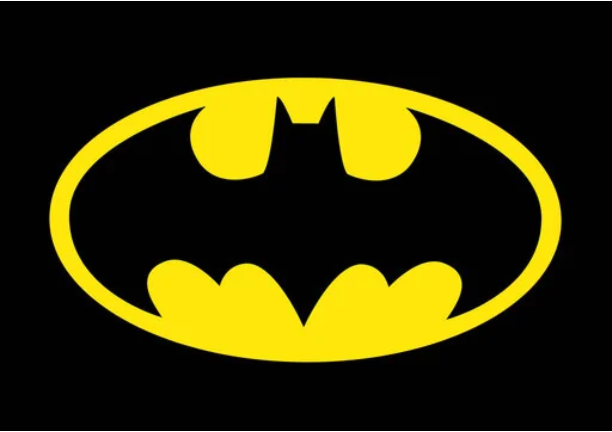
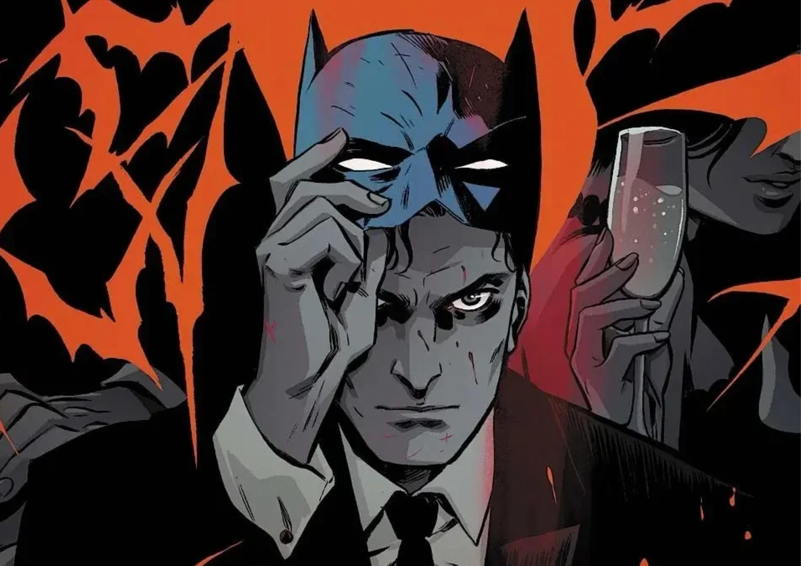
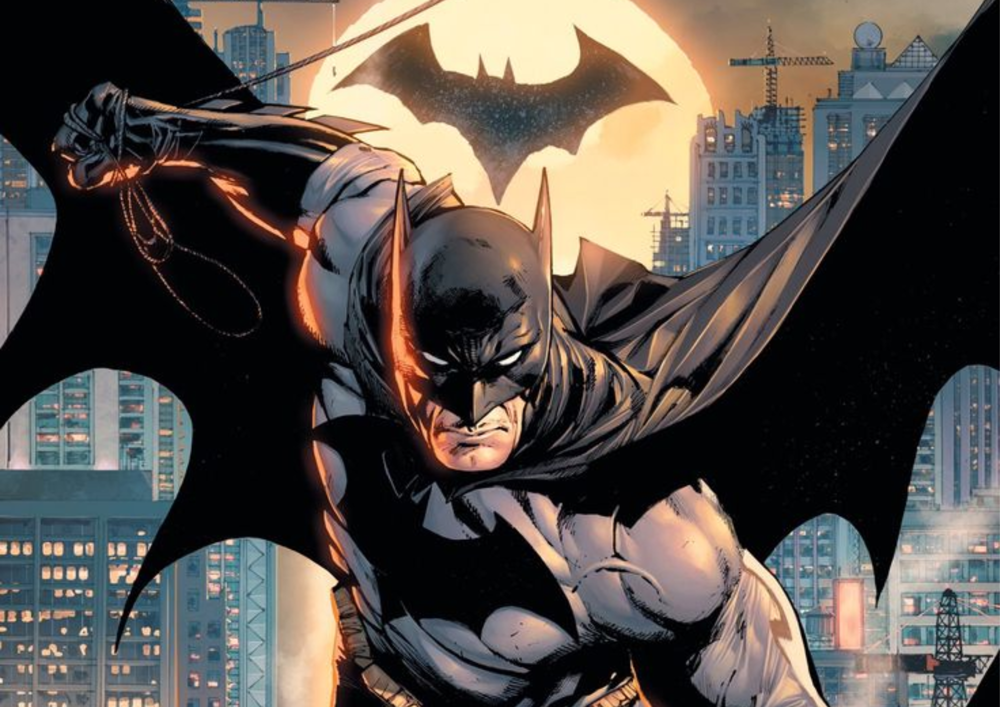

Quem deu a Bruce Wayne o direito de julgar?
Bruce Wayne é bilionário e herdeiro de uma das empresas mais poderosas de Gotham City
A noite, ele veste a máscara e decide, sozinho, quem é culpado e quem merece punição. Ninguém pediu isso a ele: Bruce simplesmente se deu o direito de fazer justiça com sas prórias mãos
Assinado: Coringa